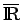
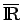

Konvergenzsätze
In den folgenden drei Aussagen seien alle betrachteten Funktionen als LEBESGUE-meßbar vorausgesetzt.
- 1. Satz von B. Levi über die monotone Konvergenz:
- Sei eine fast überall monoton wachsende Folge nichtnegativer integrierbarer Funktionen mit Werten in . Dann gilt
- 2. Satz von Fatou:
- Sei {fn} eine Folge nichtnegativer -wertiger meßbarer Funktionen. Dann gilt .
- 3. Satz von Lebesgue über dominante oder majorisierte Konvergenz:
- Sei {fn} eine Folge von meßbaren Funktionen, die auf
 fast überall zu einer Funktion f konvergiert. Wenn es eine solche integrierbare Funktion g mit fast überall gibt, dann ist f integrierbar und .
fast überall zu einer Funktion f konvergiert. Wenn es eine solche integrierbare Funktion g mit fast überall gibt, dann ist f integrierbar und .